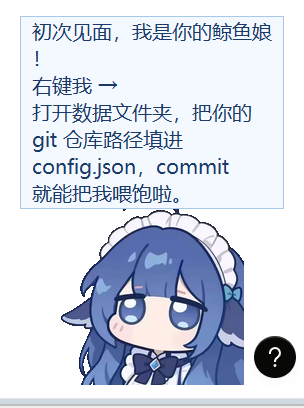
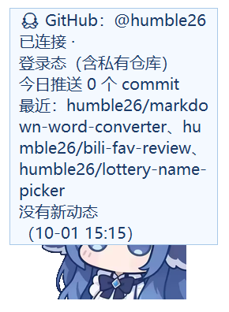

实拍截图
桌面上常驻的鲸鱼娘,带状态面板与气泡
它解决什么
commit、久坐、熬夜这些事,做的时候完全没有痛感,一周后才从身体上找回来。硬性的番茄钟容易被无脑关掉。
怎么做的
把这三件事变成一只桌面上会说话的鲸鱼娘。LLM 负责针对你的行为说风凉话,而不是播报固定文案。v0.4 起形象从程序化绘制的橘猫升级为鲸鱼娘,v0.8 打通了 Qoder 与 WorkBuddy 的真实额度接口。
关键数字
+14
每 commit 饱食度
随时间衰减 4/小时
45
分钟久坐阈值
久坐 -8 / 起身 +5
6
家 AI 客户端额度
v0.5 起并入
不可逆
熬夜代价
寿命上限 -3/小时
功能
- commit 喂养 —— 每个新 commit +14 饱食度,随时间自然衰减 4/小时。0 也不会死,但会饿得说你。
- 久坐掉血 —— 连续伏案 45 分钟 -8,起身活动 10 分钟 +5,专注期间豁免。归零则出海散心 3 天。
- 熬夜有代价 —— 凌晨 0-6 点仍活跃每小时 -3 寿命上限,不可逆。
- 远程投喂 —— 连 GitHub 后,别的机器上的推送也会顺着洋流喂到她嘴里。
- 真实额度接口 —— Qoder 直读官方配额端点,WorkBuddy 走服务端实时额度,两家都保留本地降级。
- Q 弹手感 —— 按压有回弹与音效,rua 动图,拖拽吸附镜像。

实拍截图
连上 GitHub 后的远程投喂与云端成就
实拍截图
rua 互动动图
工程细节
v0.7 是体验优化轮:气泡升级为独立圆角卡片(智能避让 + 点击穿透)、右键菜单收纳设置子菜单、渲染提速(增量平移)。
修掉一批云端投喂可靠性问题:断网重试、补喂可分次、离家期间不消费事件。